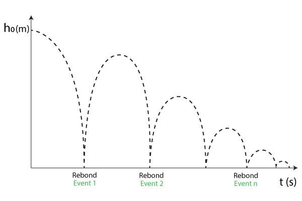

TP2 : Mesure du coefficient de rebond d’une balle#
Auteur : ARGUELLO Camilo#
Introduction#
L’objectif de ce TP est d’étudier le coefficient de restitution d’une balle de ping-pong lors qu’elle chute et rebond contre le sol. En particulier, à partir des données des temps prises par notre téléphone et l’application PhyPhox. Où, on pourra mésurer les temps de rebond de la balle. Pour évaluer notre modèle, on introduira les notions des incertitudes des erreurs systématiques ainsi que des erreurs statistiques liées à la mesure.
L’analyse est faite avec Python en utilisant les modules numpy, pandas et matplotlib.
import numpy as np
import matplotlib.pyplot as plt
import pandas as pd
import qexpy
---------------------------------------------------------------------------
ModuleNotFoundError Traceback (most recent call last)
Cell In[1], line 3
1 import numpy as np
2 import matplotlib.pyplot as plt
----> 3 import pandas as pd
4 import qexpy
ModuleNotFoundError: No module named 'pandas'
Mesure des rebonds de la balle et extraction d’une mesure du coefficient de restitution#
Dans un prémièr temps on réalise les mesures où le protocole expérimental suivi consiste dans 3 parties:
1. Choix du lieu
L’objectif est de réaliser l’expérience dans un endroit silencieux. On se place dans une pièce au sol en parquet. À l’aide d’un mètre on mesure l’hauteur initiale d’environ \(h_0 = 1\text{ m} \pm 0.01\text{ m}\).
2. Réglages PhyPhox
Dans l’application Phyphox, on cherche la section Acoustic Stopwatch, dans l’onglet Simple, on règle le seuil de détection à \(0.1\text{ m/s}\). Avec un délai de \(0.1\text{ s}\). Même s’il endroit il est silencieux, le bruit produit par la balle de ping-pong n’est pas assez fort pour que l’application puisse le détecter.
3. Mesure de temps
Nous avons mesuré les temps de rebond de la balle de ping-pong qui tombe depuis une hauteur \(h_0\). La balle de ping-pong a une masse de \(0.1\text{ kg}\). Nous avons pris trois fois les mesures de temps de rebond. Les données sont dans le fichier All.csv.
Nous pouvons estimer visuellement le comportement des rebonds de la balle de ping pong en fonction du temps, pour chaque rebond l’application mésure un évenement.

# Constantes
g=9.81 # m/s2
m=0.10 # kg (masse d'une balle de ping-pong)
h_0=1.0 # m (hauteur initiale)
# On ajoute le fichier All.csv
data = pd.read_csv('./Acoustic Stopwatch_2024-03-07_15-24-18/All.csv', sep=',')
# On affiche les 5 premières lignes
data.head()
| Event time (s) | Interval (s) | |
|---|---|---|
| 0 | 2.133771 | 0.785792 |
| 1 | 2.919563 | 0.668104 |
| 2 | 3.587667 | 0.578625 |
| 3 | 4.166292 | 0.509146 |
| 4 | 4.675438 | 0.454750 |
Les deux colonnes affichés contiennent l’information liée à:
Event time (s)le temps en seconds de déclénchement à partir des conditions initales comme le bruit au moment de faire l’expériment. On rélatione un rebond comme un évènement.Interval (s)qui corresponde au temps en seconds de l’interval entre chaque rebond.
Notre objectif en première terme c’est de calculer la différence de temps entre chaque rebond, cela va nous permettre de vérifier si l’information qu’on a mesuré est correcte, c’est-à-dire que le bruit n’a pas afecté la prise de mesures.
On va ajouter une nouvelle colonne appelée diff avec les informations de différence entre chaque évenement en seconds.
## Pour la première colonne, on calcule la différence de temps entre deux événements
# on calcule la différence de temps entre deux événements
data['diff'] = data['Event time (s)'].diff()
# on supprime la première ligne qui est NaN
data = data.dropna()
# on affiche les 5 premières lignes
data.head()
| Event time (s) | Interval (s) | diff | |
|---|---|---|---|
| 1 | 2.919563 | 0.668104 | 0.785792 |
| 2 | 3.587667 | 0.578625 | 0.668104 |
| 3 | 4.166292 | 0.509146 | 0.578625 |
| 4 | 4.675438 | 0.454750 | 0.509146 |
| 5 | 5.130187 | 0.411521 | 0.454750 |
# on verifie que la diff est égale à la colonne Interval (s)
# Il faut comparer les lignes de cette façon:
# ligne 2: data['diff'] avec ligne 1: data['Interval (s)']
# ligne 3: data['diff'] avec ligne 2: data['Interval (s)']
# ligne 4: data['diff'] avec ligne 3: data['Interval (s)']
# etc.
def interval_diff_compare(data):
for i in range(1, len(data)):
if round(data['diff'][i+1], 2) != round(data['Interval (s)'][i], 2):
return False
return True
# on verifie que la diff est égale à la colonne Interval (s)
print("La difference de temps est égale à l'intervalle 'Event time (s)': ", interval_diff_compare(data))
La difference de temps est égale à l'intervalle 'Event time (s)': True
On a bien la confirmation que les intervalles des événements calculés par Phyphox sont corrects.
Maintenant, on s’intéresse à calculer la vitesse entre chaque rebond selon la rélation:
Où, \(g\) c’est la gravité et \(T_i\) est l’intervalle de temps, dans notre cas la colonne diff.
Pour cela on ajoute une nouvelle colonne vitesse dans notre tableau. Et on fait une représentation graphique en fonction du rebound \(i\). Vu la rélation directe ntre \(T_i\) et \(v_i\), comme \(T_i\) diminue, alors on peut s’attendre à une diminution de la vitesse entre chaque rebond.
## Calcul de la vitesse entre chaque rebond grâce à la formule v_i = g * T_i / 2
data['vitesse'] = g * data['diff'] / 2
# on affiche les 5 premières lignes
data.head()
| Event time (s) | Interval (s) | diff | vitesse | |
|---|---|---|---|---|
| 1 | 2.919563 | 0.668104 | 0.785792 | 3.854308 |
| 2 | 3.587667 | 0.578625 | 0.668104 | 3.277051 |
| 3 | 4.166292 | 0.509146 | 0.578625 | 2.838156 |
| 4 | 4.675438 | 0.454750 | 0.509146 | 2.497360 |
| 5 | 5.130187 | 0.411521 | 0.454750 | 2.230549 |
# On calcule le nombre du rebond
data['rebond'] = np.arange(1, len(data)+1)
# On trace la vitesse de la balle en fonction du nombre du rebond
plt.plot(data['rebond'], data['vitesse'], '+')
plt.title('Vitesse de la balle en fonction du nombre du rebond')
plt.xlabel('Numéro du rebond')
plt.ylabel('Vitesse (m/s)')
plt.grid()
plt.show()
On a bien vérifié une diminution de la vitesse en fonction du nombre de rebonds. Pourtant, les temps de mesures vers la fin on augmenté, cela dû à du bruit enregistré lors des derniers rebonds. Alors on peut donc excluire les valeurs du bruit à partir de \(i > 23\) selon le tableau des vitesses.
## i jusqu'à 23
data = data.iloc[:23]
data.tail()
| Event time (s) | Interval (s) | diff | vitesse | rebond | |
|---|---|---|---|---|---|
| 19 | 8.647312 | 0.144646 | 0.147646 | 0.724203 | 19 |
| 20 | 8.791958 | 0.127479 | 0.144646 | 0.709488 | 20 |
| 21 | 8.919438 | 0.117313 | 0.127479 | 0.625285 | 21 |
| 22 | 9.036750 | 0.110271 | 0.117312 | 0.575418 | 22 |
| 23 | 9.147021 | 0.171437 | 0.110271 | 0.540878 | 23 |
De même, si on analyse la rélation d’energie potentielle de la balle:
Avec \(m\) la masse, \(h\) la hauteur de la balle. Si on diminue la hauteur, alors l’énergie potentielle sera aussi diminuée.
À chaque mouvement on sait que l’énergie potentielle se transforme en énergie cinetique, donc:
Si la \(E_c\) diminue, la vitesse diminuera également.
On considère maintenant l’effet que nos mesures ne sont pas infinitement précises, car dû à des erreurs systématiques (déclenchement du bruit, précision de la mesure, etc.) on a un erreur d’environ \(\pm 10\text{ ms}\) proposé par l’enonncé.
Pour calculer l’incertitud sur la vitesse, on prend en compte les incertitudes sur les mesures de temps et l’hauter \(h_0\). En utilisant l’équation de propagation des erreurs, on obtient:
où \(\Delta t\) et \(\Delta h\) sont les incertitudes sur les mesures de temps et de hauteur respectivement. On a aussi \(cov(t,h)\) qui est la covariance entre les mesures de temps et de la hauteur.
De même, on utilise l’équation de la de la chute libre :
D’où on obtient:
En utilisant la formule de propagation des erreurs et en vérifient que la covariance entre les mesures de temps et de hauteur est nulle, on obtient:
Ainsi, l’incertitude sur la vitesse peut être calculée comme:
En substituant les valeurs numériques, on obtient:
D’où on peut propager l’incertitude sur \(v \pm 0.069\text{ m/s}\) à partir de cette formule et adapter la représentation graphique avec l’outil matplotlib et la fonction errorbar.
# on calcule l'erreur sur la vitesse selon \sqrt{ \left( -g \right)^2 \Delta t^2 }
delta_t = .01 # s
erreur_vitesse = g * delta_t / np.sqrt(2)
data['vitesse_err'] = erreur_vitesse
print("L'incertude maximale sur la vitesse pour chaque rebound est: {:.3f} m/s".format(erreur_vitesse))
L'incertude maximale sur la vitesse pour chaque rebound est: 0.069 m/s
# On trace la vitesse de la balle en fonction du numéro du rebond
plt.figure(figsize = (7, 7))
plt.errorbar(data['rebond'], data['vitesse'], yerr=data['vitesse_err'], fmt='o')
plt.title('Vitesse de la balle en fonction du numéro du rebond')
plt.xlabel('Numéro du rebond')
plt.ylabel('Vitesse (m/s)')
plt.grid()
plt.show()
Maintenant on s’intéresse pour déterminer le coefficient de restitution \(K\) en fonction du numéro de rebond de la balle de ping-pong. On sait que l’énergie cinétique vaut \(E_c = \frac{1}{2} m \vec{v}^2\). On peut donc écrire le coefficient de restitution comme:
Pour calculer l’incertitude \(\Delta K_i\) sur la quantité \(K\) qui dépend de \(n\) variables \(x_j\), on peut utiliser l’approximation suivante :
Où on considére à la fois les incertitudes sur les mesures et ses corrélations éventuelles. On préfèrera les calculer la propagation des erreurs en fonction du temps au lieu de la vitesse, parce que comme on a vu avant, les mesures de vitesses sont corrélées entre elles, tandis que les mesures de temps ne le sont pas. Ce qui simplifie le calcul de l’incertitude avec:
Et on obtient:
Où on peut vérifier que l’incertitude sur la quantité \(K\) dépend simplement des incertitudes sur les mesures de départ et des dérivées partielles de la fonction \(K\) par rapport à chaque variable \(x_i\).
Dans notre cas, en posant \(x_1 = t_i\) et \(x_2 = t_{i-1}\), on obtient:
On pourra simplifier cette expression en utilisant la règle de la chaîne pour les dérivées partielles, pour arriver à:
# on calcule K
data['K'] = (data['diff'] ** 2) / (data['diff'].shift(1) ** 2)
# On calcule l'erreur sur le coefficient de restitution
data['err_K'] = 2 * data['K'] * np.sqrt((2 * delta_t / data['diff']) ** 2 + (2 * delta_t / data['diff'].shift(1)) ** 2)
plt.figure(figsize = (7, 7))
plt.errorbar(data['vitesse'], data['K'], yerr=data['err_K'], fmt='o')
plt.plot(data['vitesse'], [data['K'].mean()] * len(data['vitesse']), 'r--', label=r'$\overline{K}$=' + str(round(data['K'].mean(), 2)))
plt.title('Coefficient de restitution en fonction de la vitesse')
plt.xlabel('Vitesse (m/s)')
plt.ylabel('Coefficient de restitution du rebond K')
plt.legend()
plt.grid()
plt.show()
print("L'incertitude moyenne associée au coefficient de restitution est: {:.3f}".format(data['err_K'].mean()))
L'incertitude moyenne associée au coefficient de restitution est: 0.214
D’après cette représentation graphique, on obtient une valeur moyenne du coefficient de restitution \(\overline{K}=0.84 \pm{0.2}\), ce qui confirme la valeur attendue de (\(\overline{K} < 1\)). Pour bien comprendre cette partie, on analyse l’énergie total du système décrite par l’équation:
Où \(E_p\) représente l’énergie potentielle de la balle avant le rebond, \(E_p'\) celle après le rebond, et \(E_d\) est l’énergie dissipée par la balle pendant le rebond et \(E_c\) l’énergie cinétique. On peut donc remarquer que l’énergie cinetique perd en moyenne \(16 \%\) de son énergie à chaque rebond.
Extraction d’une erreur statistique sur les coefficients de restitution#
Dans cette partie, nous répétons les lâchers de la balle de ping-pong en maintenant la même hauteur initiale afin d’obtenir une série de mesures de temps de rebond. Ainsi, nous effectuons la procédure expérimentale pour 3 lancers.
# on crée une liste vide pour stocker les données
data_list = []
# on crée une liste de tous les fichiers à lire
dataset_list = ['./Acoustic Stopwatch_2024-03-07_15-26-31/All.csv', './Acoustic Stopwatch_2024-03-07_15-27-22/All.csv', './Acoustic Stopwatch_2024-03-07_15-24-18/All.csv']
fig, (ax1,ax2) = plt.subplots(1,2, figsize=(15,5))
means_K = list()
# on lit tous les fichiers
for index, dataset in enumerate(dataset_list):
data = pd.read_csv(dataset, sep=',')
data['diff'] = data['Event time (s)'].diff()
# on supprime la première ligne qui est NaN
data = data.dropna()
data = data.iloc[:23]
# On calcule le nombre du rebond
data['rebond'] = np.arange(1, len(data)+1)
# on calcule la vitesse
data['vitesse'] = g * data['diff'] / 2
delta_t = .01 # s
erreur_vitesse = g * delta_t / np.sqrt(2)
data['vitesse_err'] = erreur_vitesse
ax1.plot(data['rebond'], data['vitesse'], '.', label='lancer n° ' + str(index + 1))
# on calcule le coefficient de restitution K
data['K'] = (data['diff'] ** 2) / (data['diff'].shift(1) ** 2)
# on calcule l'erreur sur le coefficient de restitution \Delta K
data['err_K'] = 2 * data['K'] * np.sqrt((2 * delta_t / data['diff']) ** 2 + (2 * delta_t / data['diff'].shift(1)) ** 2)
means_K.append(data['K'].mean())
# On trace ax.plot( data['vitesse'], data['k'], 'o')
ax2.errorbar(data['vitesse'], data['K'], yerr=data['err_K'], fmt='o')
# on ajoute les données à la liste
data_list.append(data)
ax1.set_title('Vitesse de la balle en fonction du nombre du rebond')
ax1.set_xlabel('Rebonds')
ax1.set_ylabel('Vitesse (m/s)')
ax1.legend()
ax1.grid()
ax2.plot(data['vitesse'], [np.mean(means_K)] * len(data['vitesse']), 'r--', label=r'$\overline{K}$=' + str(round(np.mean(means_K), 2)))
ax2.set_title('Coefficient de restitution en fonction de la vitesse')
ax2.set_xlabel('Vitesse (m/s)')
ax2.set_ylabel('Coefficient de restitution K')
ax2.grid()
ax2.legend()
# length of the list
data_list_len = len(data_list)
print("Nombre de fichiers lus: ", data_list_len)
plt.show()
Nombre de fichiers lus: 3
D’après les résultats, on trouve la valeur moyenne du coefficient de restitution \(\overline{K}=0.84\) pour le jeu de données. On peut donc calculer l’erreur statistique sur \(\overline{K}\). On prendra 3 chiffres significatifs. De même, à l’aide du module QuexPy on peut aussi calculer les valeurs trouvées précédemment, telles que les vitesses, les incertitudes et les coefficients de restitution.
k_list = list()
k_err_list = list()
for i in range(1, len(data_list)):
data_list[i] = data_list[i].dropna()
k = data_list[i]['K']
k_err = data_list[i]['err_K']
k_list.append(k.to_numpy())
k_err_list.append(k_err.to_numpy())
## flat list
k_list = [item for sublist in k_list for item in sublist]
k_err_list = [item for sublist in k_err_list for item in sublist]
# Calcul de la moyenne et de l'écart type des valeurs de K
K_values = qexpy.MeasurementArray(k_list, error=k_err_list, unit="", name="K")
K_mean = qexpy.mean(K_values)
K_std = np.std(K_values, ddof=1)
# Calcul de l'incertitude sur la moyenne des valeurs de K
delta_K_mean = K_std / qexpy.sqrt(len(K_values))
# Affichage des résultats
print("Moyenne des valeurs de K = '{}'".format(K_mean))
print("Incertitude sur la moyenne des valeurs de K = {:.3f}".format(delta_K_mean))
Moyenne des valeurs de K = 'mean of K = 0.838 +/- 0.009'
Incertitude sur la moyenne des valeurs de K = 0.009
On voit que à partir de toutes les mesures, on obtient une distribution de valeurs pour le coefficient de restitution \(K = 0.838 \pm{0.009}\) où si on compare avec la valeur moyenne \(\overline{K}\) trouvée dans la section précedente, elle est légèrement différente. Cela est dû à des erreurs systématiques dans les mesures. Cepedant au fur et à mesure que le nombre de mesures augmente, l’erreur statistique diminue.
On calcule aussi les vitesses pour chaque rebond avec QExPy.
# On fait la conversion en array pour qexpy
vitesse = data['vitesse'].to_numpy()
vitesse_err = data['vitesse_err'].to_numpy()
# On crée un array de mesure de vitesse
vitesse_mes=qexpy.MeasurementArray(vitesse, error=vitesse_err, unit="m/s", name="vitesse")
# On affiche les mesures
print("Vitesses = ", vitesse_mes)
Vitesses = vitesse = [ 3.85 +/- 0.07, 3.28 +/- 0.07, 2.84 +/- 0.07, 2.50 +/- 0.07, 2.23 +/- 0.07, 2.02 +/- 0.07, 1.84 +/- 0.07, 1.68 +/- 0.07, 1.53 +/- 0.07, 1.42 +/- 0.07, 1.29 +/- 0.07, 1.21 +/- 0.07, 1.11 +/- 0.07, 1.02 +/- 0.07, 0.95 +/- 0.07, 0.90 +/- 0.07, 0.80 +/- 0.07, 0.76 +/- 0.07, 0.72 +/- 0.07, 0.71 +/- 0.07, 0.63 +/- 0.07, 0.58 +/- 0.07, 0.54 +/- 0.07 ] (m⋅s^-1)
plt.figure(figsize = (7, 7))
plt.errorbar(data['rebond'], vitesse_mes.values, yerr=vitesse_mes.errors, fmt='o')
plt.title('Vitesse de la balle en fonction du nombre du rebond avec QexPY')
plt.xlabel('Rebonds')
plt.ylabel('Vitesse (m/s)')
plt.grid()
plt.show()
def vitesse_error_compare(data, vitesse_mes):
"""
Cette fonction compare l'erreur sur la vitesse avec QexPY et l'erreur sur la vitesse calculée à la main
"""
for i in range(1, len(data)):
if vitesse_mes.errors[i] == data['vitesse_err'][i+1]:
return True
return False
print("L'erreur sur la vitesse est égale à l'erreur sur la vitesse avec QexPY: ", vitesse_error_compare(data, vitesse_mes))
L'erreur sur la vitesse est égale à l'erreur sur la vitesse avec QexPY: True
On remarque que l’incertitude trouvé à l’aide de QuexPy et celle trouvé à l’aide de la formule de propagation des erreurs sont les mêmes.
Conclusion#
En utilisant un exemple de chute d’une balle de ping-pong à partir d’une hauteur \(h_0\) et en mesurant le temps de rebond, nous avons pu étudier le coefficient de restitution \(K\) ainsi que les incertitudes associées aux mesures, avec deux méthodes différentes.
Les deux méthodes donnent un résultat de coefficient de restitution de rebond autour de \(\overline{K} \approx 0.84\), où pour la bibliothéque QuexPy qui utilise la méthode de Monte Carlo on trouve une incertitude de \(\Delta K = 0.009\). Tandis que pour la méthode de propagation des erreurs on trouve une incertitude de \(\Delta K = 0.2\). D’où on a pu vérifier à partir de la répétition d’une expérience on peut augmenter la précision.